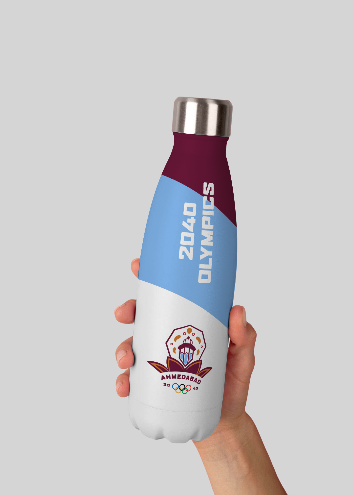
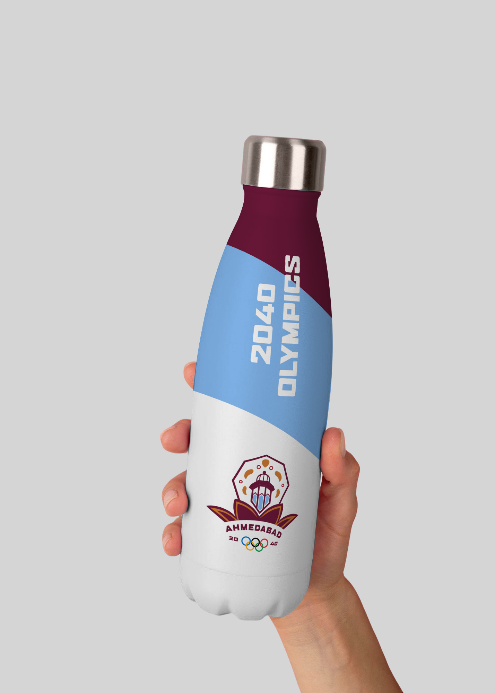

2040 India Olympics Logo
In a group of four people, we strove to create a brand for the 2040 Olympic Games taking place in Ahmedabad, India. Our goals included a logo, pictograms, athlete passes, tickets to attend the games, and a brand guide. I was assigned by the group to work on the logo and the mockups for the Olympics.
Our design focus was on Gujarati textiles and architecture. We took small details from these elements of India to create relevant designs for the 2040 Olympics. Our primary colors were based on the textiles, while the secondary colors were inspired by the architecture.
The logo incorporates an image of a minaret and the Adalaj Stepwell, an important piece of architecture in India. These symbolize a harmony between the two religions of Hinduism and Islam that are most often celebrated in the Gujarat area.
Tools: Adobe Illustrator, Adobe Photoshop
Year: Spring, 2025
 
